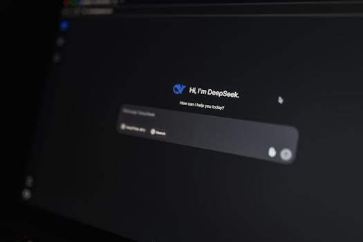

2026 AI 代勞元年：iKala 程世嘉的三個判斷，和你現在就該做的事
本文是社群貼文的完整延伸版。 社群版講了核心觀念，本文加上獨家深度分析和操作指南。
重點回顧
iKala 董事長程世嘉在哈佛商業評論的深度訪談中，提出一個清晰的判斷：2026 年是 AI 從「問答」正式進入「代勞」的元年。AI 不再只是回答你的問題，而是直接幫你把事情做完。全球已有 57% 的企業把 AI Agent 投入正式營運，市場規模預估從 76 億美元衝向 500 億。但多數台灣企業的現況是：不是 AI 不夠好，是很多人根本不知道它已經能做到什麼。
【獨家】為什麼 2026 年才是真正的轉折點？

Photo by Matheus Bertelli on Pexels你可能會問：AI 不是好幾年前就開始了嗎？ChatGPT 2022 年底就出來了，為什麼到 2026 年才叫「元年」？
關鍵在於「做到」和「做好」的差距。
2023-2024 年，AI 確實能回答問題、寫文章、生成圖片。但如果你真的拿它來處理業務流程，會發現它經常搞錯、需要反覆修正、無法串接多個步驟。那時候的 AI 像是一個剛入行的實習生——有潛力，但你不敢把重要的事交給它。
程世嘉觀察到，轉折點發生在 2025 年第四季。Google、OpenAI、Anthropic 三大陣營的模型水準幾乎同時突破了一個臨界點：推理能力大幅提升、多步驟任務的完成率顯著提高、錯誤率降到可以接受的範圍。
這跟我在企業培訓現場的觀察完全吻合。2024 年我帶企業做 AI 導入，最常聽到的反饋是「好玩但不實用」。2025 年下半年開始，同樣的企業回來說「我們部門已經離不開了」。
根據 Gartner 和 IDC 的最新數據，這個趨勢正在加速：
- 全球 57% 的企業已將 AI Agent 投入正式營運（不是實驗，是真的在用）
- 81% 的企業計劃在 2026 年擴展到更複雜的 AI Agent 應用場景
- AI Agent 市場規模從 2025 年的 76 億美元，預估 2030 年突破 500 億
- 亞太地區是全球成長最快的市場
數字很明確：這不是泡沫，是結構性的產業轉變。
【獨家】台灣企業的三道隱形門檻
 Photo by Pavel Danilyuk on Pexels
Photo by Pavel Danilyuk on Pexels
我服務過超過 400 家台灣企業，從金控、製造業到新創，發現台灣企業在 AI 導入上有三道隱形門檻，跟技術完全無關：
第一道：認知落差
老闆在論壇上聽了很多 AI 的大趨勢，回來跟團隊說「我們要做 AI」。但中階主管聽到的是「又來了一個新的 buzzword」，基層員工想的是「這跟我有什麼關係」。
程世嘉分享的 iKala 案例很有代表性：行政同仁把試算表上傳給 AI，結果自動整理好了，整個人像被雷打到。這個「被雷打到」的時刻，才是真正的轉折點——不是老闆下令，而是員工自己體驗到「原來這麼簡單」。
我在培訓現場看過無數次這個場景。有個保險公司的業務主管，花了三十分鐘學會用 AI 整理客戶資料，當場說了一句話讓我印象很深：「我這十年都在做白工。」
第二道：權限真空
很多企業的員工其實很想試 AI，但公司沒有明確說「可以用」，大家就不敢動。怕用了出事、怕資料外洩、怕被主管念。
這是管理問題，不是技術問題。解法很簡單：先劃定一個安全的試用範圍，讓團隊在這個範圍內放手試。不需要大規模導入，先讓五個人試一個月，用成果說服其他人。
第三道：技能斷層
程世嘉提到，未來最搶手的人才需要三種能力：說故事、語言能力、指揮 AI。注意這裡說的不是「寫程式」，而是「指揮」。
這跟我一直在講的「你是機長，AI 是機組人員」完全一致。你不需要自己開飛機，但你要能清楚地告訴機組人員目的地在哪、航線怎麼飛、遇到亂流怎麼處理。
目前台灣多數企業缺的不是 AI 工具（工具太多了），而是能「指揮 AI」的人。
阿峰觀點
 Photo by Tara Winstead on Pexels
Photo by Tara Winstead on Pexels
程世嘉在訪談裡提到三件在 AI 時代不會改變的事：說故事的能力、實體互動的經驗、好奇心。
我特別想聊好奇心這件事。
他說好奇心是很多特質的根源——熱情、韌性、毅力、學習力，都從好奇心開始。這句話聽起來像雞湯，但在我培訓 400 多家企業的經驗裡，這是真的。
學得最快的人，從來不是技術底子最好的，而是最願意動手試的。有個 55 歲的傳產老闆，完全不會寫程式，但他每天花一小時跟 AI 對話，三個月後他的 AI 使用能力比他公司裡的年輕工程師還強。
為什麼？因為他好奇。他想知道 AI 到底能幫他做什麼，每天都在問「這個可以嗎？那個呢？」
AI 時代的生存法則其實很簡單：保持好奇、動手去試、然後每天用。
不需要懂所有技術，但你不能不知道 AI 已經能幫你做什麼。
本文提到的資源
| 資源 | 連結 | 說明 |
|---|---|---|
| 哈佛商業評論 × 程世嘉訪談 | YouTube | 1 小時深度訪談完整版 |
| iKala 2026 AI Agent 趨勢報告 | iKala Blog | 企業 AI Agent 落地五大趨勢 |
| Gartner / IDC AI Agent 市場分析 | 分析報告 | 全球 AI Agent 採用現況 |
想帶團隊導入 AI？阿峰老師服務過超過 400 家企業，從金控到製造業都有實戰經驗。 → 聯繫阿峰老師
關於作者
黃敬峰（AI峰哥），企業 AI 實戰培訓專家，400+ 企業合作、10,000+ 學員。 核心心法：「會用、懂用、好用、每天用」 官網：https://www.autolab.cloud
SEO: - Meta Title：2026 AI 代勞元年：iKala 程世嘉的三個判斷，和你現在就該做的事 - Meta Description：iKala 董事長程世嘉判斷 2026 年是 AI 代勞元年。全球 57% 企業已正式導入 AI Agent，台灣企業該怎麼跟上？阿峰老師從 400+ 企業培訓經驗分析三道隱形門檻和解法。 - Tags：#AI #AIAgent #企業AI導入 #程世嘉 #iKala - Target Keywords：AI代勞元年, AI Agent 企業導入, 程世嘉 iKala, 企業AI培訓, 2026 AI趨勢